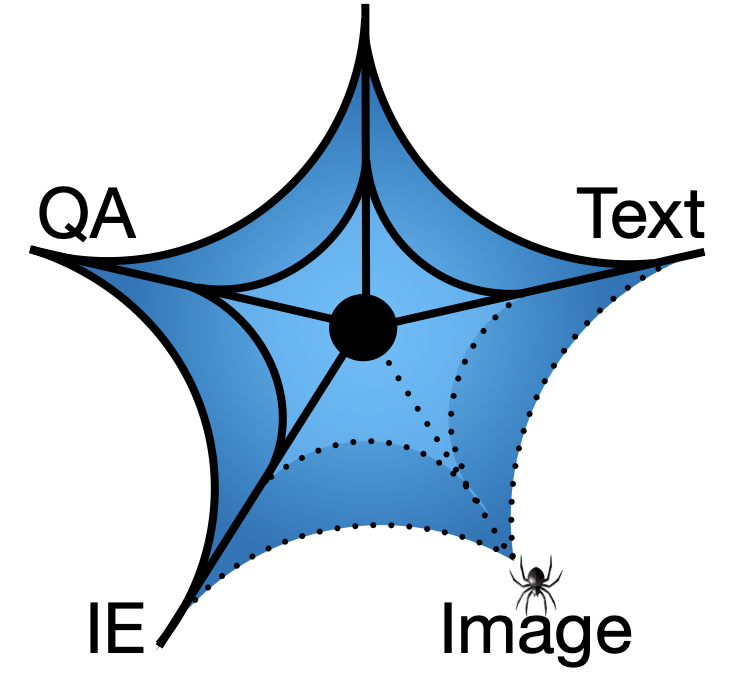

WebQA 
Answering Questions and Citing Your Sources
| Yingshan Chang | Yonatan Bisk | Mridu Narang | Levi Melnick |
| Guihong Cao | Hisami Suzuki | Jianfeng Gao |
WebQA, is a new benchmark for multimodal multihop reasoning in which systems are presented with the same style of data as humans when searching the web: Snippets and Images. The system must then identify which information is relevant across modalities and combine it with reasoning to answer the query. Systems will be evaluated on both the correctness of their answers and their sources.